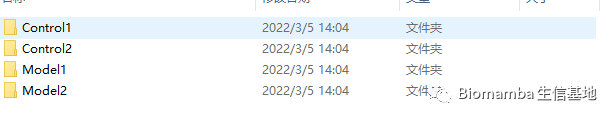
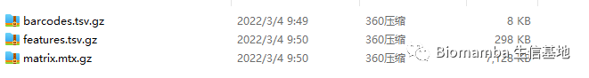

答读者问 （十一）如何一次性读取一个目录下的cellranger输出文件？
原文：https://mp.weixin.qq.com/s?__biz=MzAwMzIzOTk5OQ==&mid=2247485145&idx=1&sn=402cb28c16aba0dc647037c9b7aba8f7&chksm=9b3f7f89ac48f69fe27cd427df3eff2e88c240bf20dfe92d8b522eecd7302d132d880bf29047#rd 合集：单细胞教程全收录 / 答读者问
往期回顾
答读者问 （五）如何实现各物种基因的ID/symbol的转换
问题
在“答读者问 （九） 如何将数百个文件整合为一个矩阵”中我们谈过类似的问题，这篇推送主要是将这个方法运用到我们的单细胞数据读取中。
怎么解决问题
比如我有这么个文件夹，其中有四个子文件夹

每个子文件夹中包含的都是cellranger的输出文件

我们来操作一下：
读入文件
samples=list.files('data')#列出路径中的样本
samples
## [1] "Control1" "Control2" "Model1" "Model2"
dir <- file.path('data',samples)#得到样本路径
names(dir) <- samples
dir
## Control1 Control2 Model1 Model2
## "data/Control1" "data/Control2" "data/Model1" "data/Model2"
if(!require(Seurat))install.packages('Seurat')
## Loading required package: Seurat
## Warning: package 'Seurat' was built under R version 4.0.5
## Attaching SeuratObject
counts <- Read10X(data.dir = dir)
创建Seurat对象
scRNA1 = CreateSeuratObject(counts,min.cells = 3, min.features = 200)
unique(scRNA1$orig.ident)#变量就存在这里
## [1] Control1 Control2 Model1 Model2
## Levels: Control1 Control2 Model1 Model2
scRNA1$sample <- scRNA1$orig.ident#你也可以转存一下
接下来走这两讲的内容就可以分析啦

如何联系我们
 最近发现后台中有一些消息我没能及时看到并答复，微信后台中超过48h后便不允许回复读者消息，这里还是再给大家留一下答疑的扣扣号，方便大家随时交流。微信号可以点击喜欢作者 后自动回复里有。欢迎大家向我咨询或者提供建议。大家可以阅读完这几篇之后添加我：如何搜索公众号过往发布内容
答疑公约
笑一笑也就算了
最近发现后台中有一些消息我没能及时看到并答复，微信后台中超过48h后便不允许回复读者消息，这里还是再给大家留一下答疑的扣扣号，方便大家随时交流。微信号可以点击喜欢作者 后自动回复里有。欢迎大家向我咨询或者提供建议。大家可以阅读完这几篇之后添加我：如何搜索公众号过往发布内容
答疑公约
笑一笑也就算了